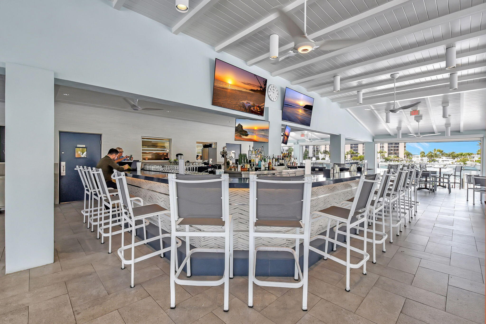

Community Pulse
Thank you to everyone who took part in the October 2026 survey on the Initial Capital Contribution, capital planning, and the community’s direction. Every answer below came from a resident, and none of them are attributed.
Thank you to everyone who took part in the July 2026 survey. Every answer below came from a resident, and none of them are attributed.
The Initial Capital Contribution
What residents think the ICC should be, who should pay it, and how future projects should be funded. Percentages are of the 35 submissions, not of the community.
Question 1
The Board is considering increasing the Initial Capital Contribution (ICC) paid by new purchasers from $50,000 to $75,000. Do you support this proposed increase?
- Yes, I support increasing the ICC to $75,000 17 · 48.6%
- I would support an increase, but to an amount below $75,000 1 · 2.9%
- No, I prefer keeping the ICC at $50,000 12 · 34.3%
- I need more information before forming an opinion 5 · 14.3%
Question 2
If an existing YARCOBR owner sells their unit and buys another YARCOBR unit as their new residence, what portion of the prevailing ICC should they pay?
- No ICC 29 · 82.9%
- 25% of the prevailing ICC 1 · 2.9%
- 50% of the prevailing ICC 4 · 11.4%
- I need more information before forming an opinion 1 · 2.9%
Question 3
If an existing YARCOBR owner keeps their current unit and buys an additional YARCOBR unit as an investment or rental property, what portion of the prevailing ICC should they pay?
- No ICC 2 · 5.7%
- 25% of the prevailing ICC 6 · 17.1%
- 50% of the prevailing ICC 9 · 25.7%
- 100% of the prevailing ICC 17 · 48.6%
- I need more information before forming an opinion 1 · 2.9%
Question 4
As YARCOBR plans for future capital improvements, which approach should be the primary source of funding?
- Initial Capital Contribution (ICC) paid by purchasers 23 · 65.7%
- Special assessments when major projects arise 4 · 11.4%
- Regular HOA assessments 4 · 11.4%
- I need more information before forming an opinion 4 · 11.4%
Capital planning and priorities
How much a long-range plan matters, where the money should go first, and how residents feel about the community’s direction.
Question 6
Which areas should YARCOBR prioritize for future capital improvements? Residents could select up to three.
- Building infrastructure and structural needs 18 · 51.4%
- Entrance, guardhouse and arrival experience 15 · 42.9%
- Beach facilities and improvements 14 · 40.0%
- Chickee Bar / food & beverage facilities 13 · 37.1%
- Marina and seawall 13 · 37.1%
- Landscaping and grounds 10 · 28.6%
- Pools and spas 10 · 28.6%
- Clubhouse and common-area improvements 10 · 28.6%
- Security systems and facilities 6 · 17.1%
- Tennis, pickleball and other recreational facilities 5 · 14.3%
- Other 2 · 5.7%
Up to three selections each, so these add up to more than 100%. One “Other” answer read “ALL”.
Question 5
How important is it that YARCOBR develop and communicate a formal 5–10 year capital improvement plan covering major infrastructure, maintenance and amenity projects?
- Very important 23 · 65.7%
- Somewhat important 9 · 25.7%
- Not very important 1 · 2.9%
- I need more information before forming an opinion 2 · 5.7%
Question 7
Overall, how satisfied are you with the direction YARCOBR is heading?
- Very satisfied 11 · 31.4%
- Somewhat satisfied 12 · 34.3%
- Neither satisfied nor dissatisfied 5 · 14.3%
- Somewhat dissatisfied 5 · 14.3%
- Very dissatisfied 2 · 5.7%
Key takeaways
- Nearly half (48.6%) support raising the ICC for new purchasers to $75,000. About a third (34.3%) prefer keeping it at $50,000, and 14.3% want more information first.
- Most (82.9%) say an owner who sells and buys another YARCOBR unit to live in should pay no ICC. For an owner adding a second unit as an investment, the most common answer (48.6%) is the full ICC.
- The ICC is the clear first choice (65.7%) for funding future capital improvements, well ahead of special or regular assessments (11.4% each).
- 91.4% say a formal 5–10 year capital improvement plan is very or somewhat important.
- The top priorities are building infrastructure (51.4%), the entrance and guardhouse (42.9%) and beach facilities (40.0%).
- About two thirds (65.7%) are very or somewhat satisfied with the direction YARCOBR is heading; 20% are dissatisfied.
Moving within YARCOBR
Say no ICC
The strongest agreement in the survey: 29 of 35 residents say an owner who sells and buys another YARCOBR unit as their home should not pay the ICC again.
What residents wrote
21 of the 35 respondents answered the open question about the single most important issue for leadership. The most common themes were the Chickee Bar’s food and its management, finishing current projects before starting new ones (and scheduling major work out of season), and long-term structural needs such as concrete restoration and the marina seawall.
Several residents also raised the level of HOA fees, transparency about how past assessments were spent, and having owners involved in major decisions. Others asked for updated landscaping and common areas, better night lighting on walkways, and a year-round Chickee Bar. All 21 comments appear word for word in the full results PDF.
The survey was voluntary and residents chose whether to take part, so these results are not a scientific sample or an official community vote.
Community Pulse gives residents an anonymous read on their own community. Names, email addresses and individual response records are never published, and comments are never attributed.
Community snapshot
How long people have been here, how much of the year they spend here, and how old they are. Percentages are of the 27 who responded, not of the community.
Years living at YARCOBR
- 1 – 5 years 40.7%
- 6 – 10 years 7.4%
- 11 – 20 years 14.8%
- More than 20 years 37%
Residency
- Full-time 18.5%
- Seasonal (6+ months a year) 40.7%
- Seasonal (under 6 months) 40.7%
Age range
- Under 50 0%
- 50 – 59 7.4%
- 60 – 69 40.7%
- 70 – 79 22.2%
- Over 80 29.6%
Key takeaways
- Residents love the waterfront lifestyle, private beach, marina, and tropical setting.
- A strong sense of community is the top reason residents chose YARCOBR.
- The Chickee Bar is a favorite amenity and gathering place.
- Top priorities are enhancing dining, modernizing common areas, and limiting major renovations in peak season.
- Residents value better communication, guest amenities, and social events.

Chickee Bar
Visits a week
Nearly half of respondents visit this often, making the Chickee Bar one of the amenities residents value most.
Community summary
Residents overwhelmingly value what makes YARCOBR unique — its waterfront lifestyle, private beach, marina, tropical setting, and strong sense of community. Many described the community itself as the primary reason they bought here.
The most frequent suggestions were enhancing the Chickee Bar dining experience, modernizing common areas, expanding guest amenities such as showers and lockers, and continuing to improve communication between residents, management, and the Board.
Overall, the survey reflects a community proud of where it lives and eager to see thoughtful investment that preserves YARCOBR's character while improving the resident experience.
Community Pulse gives residents an anonymous read on their own community. Names, email addresses and individual response records are never published, and comments are never attributed.